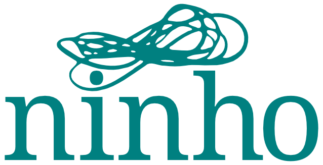

Conversa Ubatuba é um portal colaborativo, aberto e gratuito, para conversas e projetos de Ubatuba e região.
Clique nas setas à direita desta tela para navegar na apresentação. Para ter uma visão geral dela, clique "ESC" no seu teclado.
O portal foi criado no ninho, em diálogo com a plataforma colaborativa inc.ubalab.
O sistema também conta com moderadores voluntários. Você pode ver quem são essas pessoas, a qualquer momento, nesta página.
A principal motivação para a criação e o desenvolvimento do Conversa Ubatuba é possibilitar que conversas importantes para a cidade não fiquem restritas a plataformas fechadas e opacas como Facebook, Whatsapp e similares.
Clique aqui para saber por que elas são problemáticas.
Alguns problemas de utilizar plataformas fechadas para assuntos importantes:
Clique aqui para entender mais sobre esses problemas, ou continue a apresentação para saber o que estamos construindo.
Tem muita gente pesquisando as espinhosas questões ligadas a privacidade, acesso a informação e vigilância. Para saber mais sobre o assunto, veja por exemplo esta matéria na Vice sobre os dados que o Google e o Facebook coletam de seus usuários. Acompanhe também as atividades da LAVITS, a rede latino-americana de estudos sobre vigilância, tecnologia e sociedade.
Se quiser continuar neste assunto, assista a um vídeo com a professora Fernanda Bruno falando sobre os problemas dos dados pessoais nas redes sociais.
Se você tem dúvidas sobre isso, fique à vontade para postar um tópico sobre o site, e ficaremos felizes em dialogar e aprofundar o assunto.
A primeira coisa a fazer é registrar-se no portal Conversa Ubatuba. Clique no botão correspondente no topo da página inicial.
Aqui você tem duas opções:
Se já tem cadastro no portal, vamos entrar e conhecê-lo melhor.
Para criar uma conta diretamente com seu email:
Insira seu endereço de e-mail, escolha um nome de usuário (nickname), seu nome e uma senha segura (ao menos 8 caracteres, misturando letras e números).
Clique em "Criar nova conta".
Você receberá uma mensagem por e-mail com um link para confirmar seu cadastro. Se você não abrir esta mensagem e clicar no link, o cadastro não estará completo e você não vai poder participar das conversas no portal.
Se você preferir, pode se registrar usando alguma rede social em que já tenha cadastro. O portal está integrado com Facebook, Google e GitHub para autenticação. Após clicar no botão correspondente, clique em autorizar na janela de confirmação. Em seguida, você retornará à tela de cadastro, já com alguns campos preenchidos pela rede social. Clique em "Criar nova conta" e já pode entrar no sistema.
No seu primeiro acesso, o sistema avisa que você recebeu uma mensagem. Clique no botão indicado para receber a mensagem do roboconversador.
Interaja um pouco com ele. Aos poucos, o robô vai ensinar-lhe o funcionamento básico das ferramentas do portal.
Se você já dispensou ou excluiu a primeira mensagem do Robô, não tem problema. Acesse o perfil dele e clique em "Mensagem" para começar outra conversa.
Agora vamos dar uma olhada na página inicial.
Você pode ver que existem duas colunas. A coluna da esquerda lista as categorias de conversas. Veja que abaixo de cada categoria existem também subcategorias.
Por exemplo, dentro da categoria Agenda Ubatuba existem as subcategorias Participação e Sociedade, Cursos e Oficinas e Cultura e Entretenimento. Você pode entender cada categoria geral como um prédio, e cada subcategoria como uma sala dentro de um prédio.
Vamos então prestar atenção em uma conversa em particular, ou um tópico para usar o termo utilizado no portal. Este aqui é um bom começo: Vamos nos apresentar? Foi proposto por um dos fundadores do site, Felipe Fonseca, para que os usuários do site possam apresentar-se uns para os outros.
Veja mais informações, ou veja como responder a uma conversa.
Preste atenção nas informações que são exibidas aqui na parte superior da tela: o tópico faz parte da subcategoria "Conversas Gerais" dentro da categoria "Sobre este site". Ela foi criada em outubro de 2018. Desde então até o dia em que esta imagem foi feita, ela já teve 23 respostas, de 20 usuários. Ela teve ainda 267 visualizações e 115 curtidas, e ao longo desse tempo 18 links foram compartilhados no tópico.
A barra no lado direito da tela permite percorrer facilmente toda a conversa.
Esta foi uma breve introdução ao portal Conversa Ubatuba. Esperamos que tenha entendido e gostado. Aguardamos você para continuar a conversa no site.